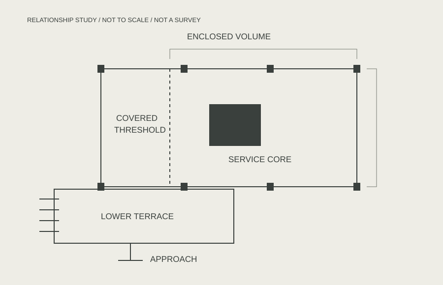

MONOGRAPH / 001
Edith Farnsworth
House.
- Architect
- Ludwig Mies van der Rohe
- Location
- Plano, Illinois, USA
- Completed
- 1951

01 / READING THE BUILDING
Between a horizontal
line and the landscape.
The white frame makes a clear horizontal figure against the branches. Raised planes and a glazed enclosure give the photograph two different kinds of edge: one solid, one transparent.
This is an independent visual reading of a historic building, not a project by Field / Measure. The site’s own history identifies Mies van der Rohe’s design and the 1951 completion.
Read the building’s official history ↗02 / PLAN RELATIONSHIPS
Frame.
Enclosure.
Threshold.
An interpretive diagram separates the enclosed volume, covered threshold and lower terrace. It records relationships, not measured construction information.

03 / A CLOSER READING
A thin edge,
held in place.
The crop brings the white roof line and supporting frame closer. The foreground tree remains part of the image: the building is read through its setting.
Photographic observation and diagrammatic explanation serve different purposes. Neither replaces a measured record or a visit to the building.
Find the project in the atlas →Source notes
Photograph: Carol M. Highsmith, Library of Congress, LC-DIG-highsm-04118. Public-domain photograph, supplied through Wikimedia Commons; monochrome WebP conversion. Diagram: original interpretive drawing, MIT.
Read credits and limits
Photograph source · Highsmith rights statement · Local rights record. The layout is a fictional publication, independent of the building and photographer. No authorship or affiliation is implied.